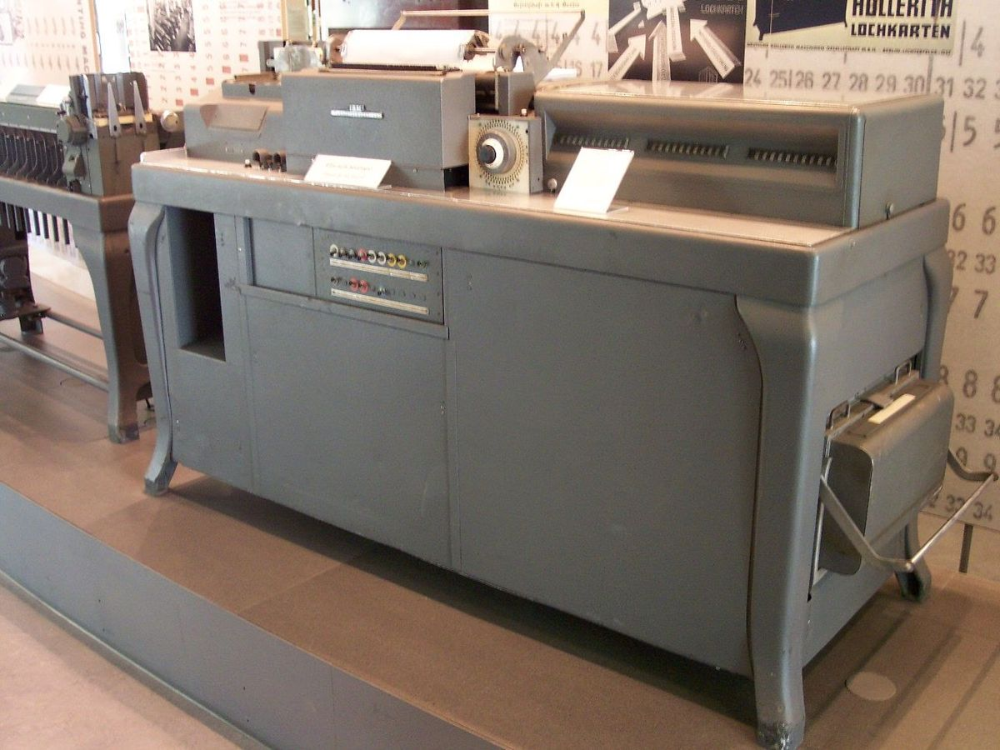

|
Механічні обчислювальні пристрої (XVII–XIX століття): Паскаль і Лейбніц: У XVII столітті Блез Паскаль та Готфрід Вільгельм Лейбніц розробили механічні калькулятори для виконання базових арифметичних операцій. |

Табуляційні машини (XIX століття): Жаккардова ткацька машина: Розвинена у 1801 році, ця машина використовувала перфокартки для програмування ткацьких візерунків, що послужило ідеєю для подальшого розвитку обчислювальних машин. |
Мікропроцесори та особисті комп'ютери (1970-і роки): Альтейр 8800 та IBM PC: У 1970-х роках з'явилися мікропроцесори, що дозволило створити персональні комп'ютери. Альтейр 8800 та IBM PC відіграли ключову роль у популяризації особистих комп'ютерів. |
Смартфони та хмарні технології: Зростання популярності смартфонів та використання хмарних обчислень сприяли мобільності та доступності обчислювальних ресурсів. |
|---|